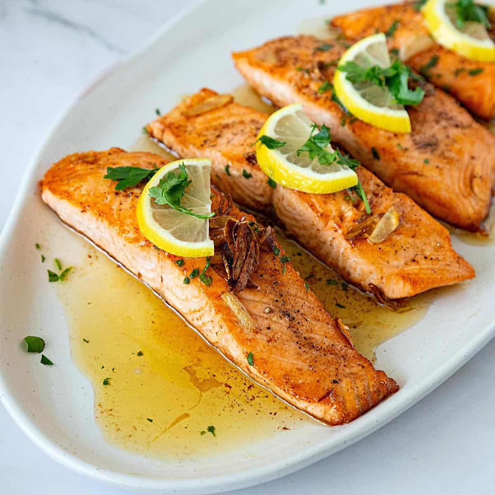

How to make Garlic Butter Salmon
Home

Description
Garlic Butter Salmon might look like a simple recipe, but it’s got clout. Salmon is basted continuously with bubbling garlic butter so it seeps
into every crack and crevice. A cheffy technique that’s actually dead simple yet produces a luxurious result – you’ll feel (and look)
like a pro!
I was a bit hesitant to share this recipe, thinking, “Salmon cooked in garlic butter? So obvious. So simple,” But as I thought about it, I realised
that I did actually have some things to say about this “simple” recipe. I'm happy to share with you how I make this delicious dish.
Ingredients
- Salmon Fillets: Opt for skinless, if you can. More exposed flesh means more garlic butter will seep into the meat! But if
you’ve only got skin-on, it’s really not a big deal and I’ve included directions in the recipe.
- Garlic: Because I think I mentioned this is a garlic butter salmon? Finely chop the garlic using a knife and don’t use a
garlic crusher because the garlic will burn too quickly otherwise. Also garlic crushers force the garlic juice out, causing it to spit
everywhere when it hits the hot butter.
- Butter: 99% of the time when cooking, I use unsalted butter. For this recipe though, I used salted because I happened
to have it. Conveniently, salted butter here partially takes care of the seasoning for you. If you only have unsalted, just add a pinch of
salt into the butter.
- Lemon: Just a little squeeze towards the end, for the tiniest tang to balance the richness of the butter. It’s not intended
to be a lemon butter sauce like this one. Most people wouldn’t even identify lemon in this!
- Parsley: For some color as a garnish.
Steps
- Season salmon with salt and pepper.
- Sear the curved presentation side of the salmon (ie. put it in upside down) and cook for 3 minutes until it is nicely
golden.
- Butter and garlic: Turn the salmon, cook another minute, then add the butter. As soon as the butter melts, add the garlic;
then
- Baste, baste, baste: Immediately after you’ve added the garlic and even before it has had a chance to go golden, start
basting. To do this, tilt the pan slightly so the butter pools on one side. Then scoop up the butter using a large spoon and spoon it over the
salmon. The garlic will cook as you baste so by the time the salmon is done, the garlic is perfectly golden.
- Baste 1 1/2 minutes: Baste for 1 1/2 minutes in total, which should be a total cooking time of around 3 minutes for the
second side (1 minute cooking after turning + 30 seconds butter melting time + 1 1/2 minutes basting). Target an internal temperature of
50°C/122°F for medium-rare (optimum juiciness), with the thermometer inserted into the middle of the thickest part of the salmon. See below
for more information on the internal temperature of cooked salmon; and
- Rest 3 minutes, then serve with the garlic butter in the pan!